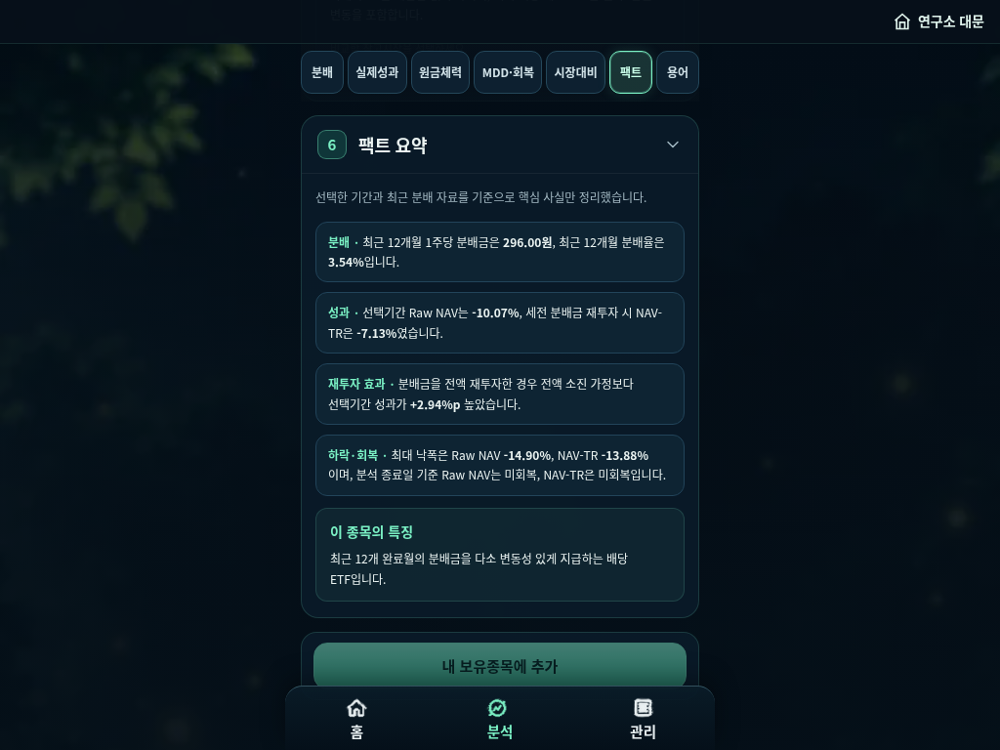
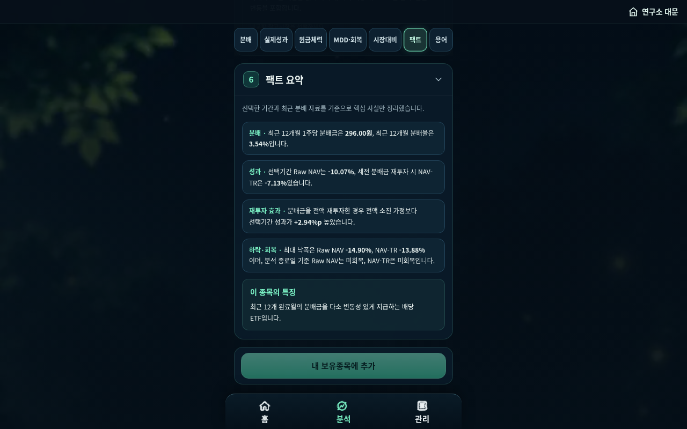
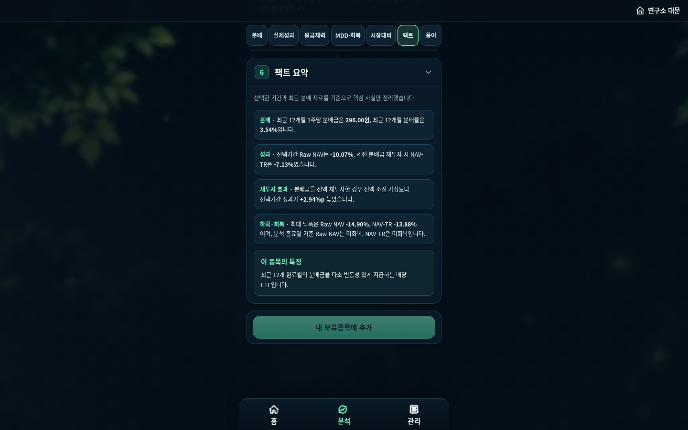
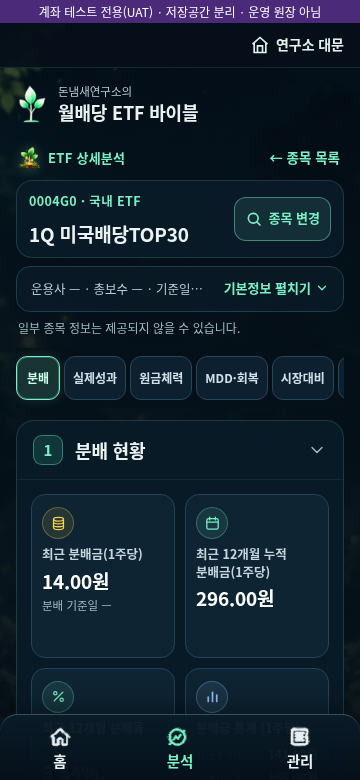
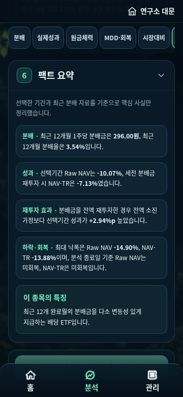
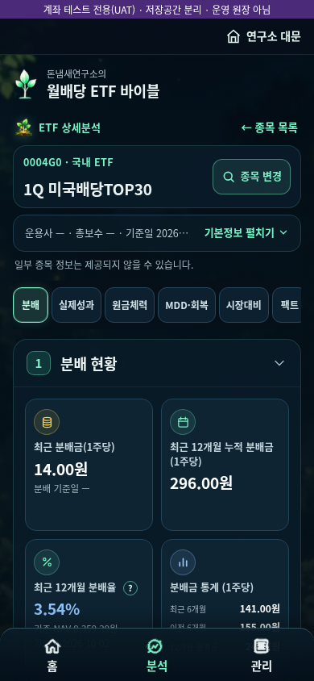
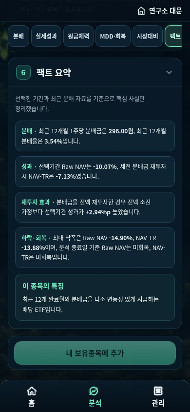
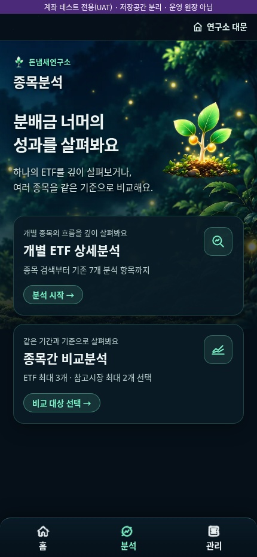
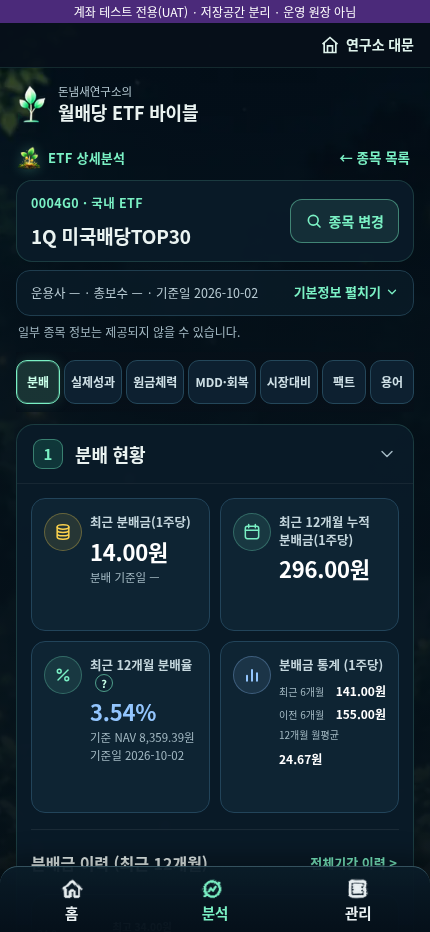
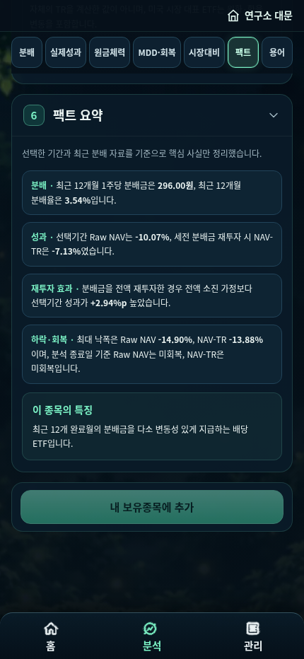

UAT: account-uat/ · 기준 커밋 96bd93f (태그 v53h-final-96bd93f) · 갤럭시 실기기: NOT TESTED · 표본 계좌만 사용, 개인 데이터 없음
| PASS | UAT 첫 진입: UAT 원장 비어 있음(메인 가짜 원장 미참조) |
| PASS | UAT 화면에 UAT 표식 "[계좌 UAT] 계좌·거래 관리 · 돈냄새연구소" |
| PASS | 새 테스트 계좌 생성 + 10주 매수(0004G0) |
| PASS | 5주 추가 매수 |
| PASS | 3주 매도 |
| PASS | 잔고 12주 "12주" |
| PASS | 거래내역 3건(10/5/3)·수량 |
| PASS | 자산(성과) 화면 금액·기준일 표시 "돈냄새연구소\n정밀하게 분석하고, 천천히 키운다.\n배당이 키운 자산\n\n배당이 키운 자산과 수량, 배당 흐름을 살펴봐요.\n\n← 홈으로\n전체\n계좌별\n종목별\n배당이 키 |
| PASS | 두 번째 테스트 계좌 생성 |
| PASS | 계좌 2개 |
| PASS | 계좌 전환 시 해당 계좌 보유만(B=497880) |
| PASS | 입력 후 취소(Esc) → 원장 변화 없음 |
| PASS | 동일 거래 2회 입력 → 별도 2건(order_key 0,1)으로 기록, 오류 없음(앱 기존 동작) |
| PASS | 중복분 1건 삭제 5 |
| PASS | 새로고침 후 원장 유지 |
| PASS | 뒤로/앞으로 이동 후 원장 유지 |
| PASS | 새 탭 재접속 후 원장 유지 |
| PASS | 재접속 후 잔고 12주 "12주" |
| PASS | UAT가 194 승인 지급일 구분 참조(actual 1088 / estimated 3416) |
| PASS | 배당 이벤트 실제/예상 구분 표시, 중복 0, 자동 실입금 확정 0 |
| PASS | 기준일 표시(시장가격·분배금 자료 기준일) |
| PASS | 수집(시세) 실패 시 오류 상태 표시 |
| PASS | UAT 백업 = UAT 원장 |
| PASS | UAT 원장만 초기화 |
| PASS | 복원 → 거래·계좌 동일 |
| PASS | 복원 후 잔고 12주 "12주" |
| PASS | [격리] 메인/기존 localStorage 키·값 전부 불변 |
| PASS | [격리] UAT가 메인 sessionStorage 키를 쓰지 않음(메인 페이지 자체 scroll 키 제외) |
| PASS | [격리] 메인 캐시(이름·항목수) 불변 |
| PASS | [격리] UAT 캐시는 dnmuat194-* 만 생성 |
| PASS | [격리] SW 등록: 메인 scope 유지 + UAT scope=account-uat/ 별도 |
| PASS | [격리] UAT 쓰기 키 = dnmuat194.* 만 |
| PASS | [격리] IndexedDB 신규 생성 0 |
| PASS | [역방향] 메인 앱 가상 거래 기록 |
| PASS | [역방향] 메인 사용 후 UAT 키·값 불변 |
| PASS | [역방향] 메인 사용 후 UAT 캐시 불변 |
| PASS | [역방향] 메인 쓰기 키는 donnaemsae.* 만 |
| PASS | 콘솔/페이지/HTTP 오류 0 (의도적 시세 차단 제외) |
| PASS | fresh throwaway profile: no stored facts |
| PASS | 497880 검색 노출 |
| PASS | register=497880 → 거래 등록 시트에 497880 선택 "497880" |
| PASS | FAB opens trade sheet & FAB hidden while open |
| PASS | 8px slider kept (all dialog track rules 8px, input bg transparent/no border) |
| PASS | 최초매수 497880 10주 |
| PASS | 최초매수 472150 10주 (새 계좌 ISA) |
| PASS | 매도 시 해당 계좌 보유종목만 표시 |
| PASS | 추가매수 시 보유종목만 표시 |
| PASS | 최초매수 시 194종 전체 표시 194 |
| PASS | 자동금액 = 수량×가격 (7×12,345=86,415) |
| PASS | 추가매수 497880 5주 |
| PASS | 같은 날짜 복수 거래 (2026-03-03 두번째) |
| PASS | 같은 날 order_key 0,1 순서 |
| PASS | 부분 매도 497880 3주 |
| PASS | 매도 비율 50% → floor(27×0.5)=13주, 잔여 14주 |
| PASS | 비율 매도 저장 |
| PASS | 슬라이더 100% → 보유 전량 14주 "14" |
| PASS | 전량 매도 저장 |
| PASS | 보유 초과 매도 차단 |
| PASS | 전량매도 종목은 매도 목록에서 제외 |
| PASS | 전량매도 후 최초매수로 새 사이클 |
| PASS | 0018C0 사이클 2개 2 |
| PASS | 신규 ETF 배당재투자 (보유 없던 0005A0, 50%) |
| PASS | 잔여 배당현금 재투자 (0005A0, 100%) |
| PASS | 잔여 현금 대조: 2차 사용가능 = 1차 사용가능 − 1차 매수금액 |
| PASS | 거래 수정 (추가매수 5→6주) |
| PASS | 거래 날짜 변경 (03-03→03-04) |
| PASS | 거래 삭제 9 |
| PASS | 새로고침 후 원장·화면 동일 |
| PASS | 거래 레코드 스키마 키 불변 |
| PASS | 백업 파일 = 저장 원장 |
| PASS | 기록 초기화 |
| PASS | 백업 복원 → 원장 동일 |
| PASS | 복원 후 성과 화면 숫자 동일 |
| PASS | SW scope=사이트 경로, 새 캐시명, mobile-ui-v1.css 캐시 |
| PASS | 오프라인 새로고침 (SW 캐시) "계좌 테스트 전용(UAT) · 저장공간 분리 · 운영 원장 아님\n연구소 대문\n돈냄새연구소\n정밀하게 분석하고, 천천히 키운다.\n계좌·거래 관리\n\n" |
| PASS | UAT 가상 데이터 정리 (dnmuat194.* 만 삭제) |
| PASS | 콘솔/페이지 오류 0건 |
RESTORE_BASELINE.md UAT_BUILD_INFO.json new.log regress.log vp.json














